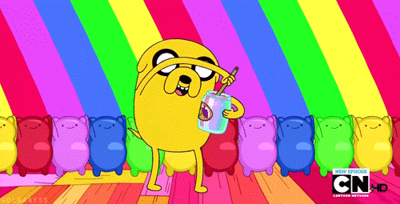
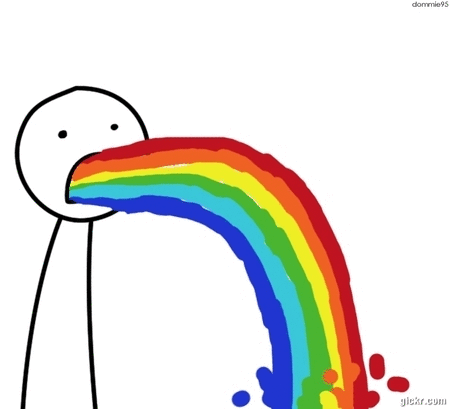

Welcome to the tutorial!
This tutorial will show you how to change the game colors using its configuration variables.
You'll learn a few of the ridiculous ways to express colors on the web, and be able to customize
the game to your liking.
IT'S GONNA BE SUPER PRETTY UR GONNA LOVE IT!

Changeable colors
There are five colors you can easily control in the game:
- line 52: the background color
- line 59: the player color while alive
- line 60: the player color when dead
- line 69: the robot color when alive
- line 70: the robot color when dead
The values you see within quotes at those locations are colors, even though they may not look like it.
Let's try something simple to start...
Named colors
On line 52, change "#002b36" to be "midnightblue".
Did the background change? The background should have changed. Did it? Good.
That worked because midnightblue is a CSS color keyword. Check out
this page to learn more
about the basic and extended color keywords.
peachpuff robots on a field
of salmon? Go for it, weirdo.

Other colors
There are other ways to talk about colors that the game can understand as well.
Take another look at the CSS Color Module Level 3
page I sent you to a moment ago. Anything look familiar? The section on RGB color values
will explain what the original "#002b36" business was all about.
Experiment for a while with expressing colors in different ways. Color keywords can only do so much
for you, but with RGB or HSL you can get a little more specific about the shade of mauve that would
be just perfect for your palette!
Going deeper
So by now your game should be looking pretty great, but maybe you're wondering why you have to express colors
in these weird and varied ways? Let's go a little bit deeper.
Under the hood, the game is using an element called a canvas to draw everything to the screen, and
the colors you are setting are being set as the fillStyle to use on that canvas.
This
MDN article talks all about fillStyle, and as you can see, one of the things it can accept
is a string representing a CSS color. And where do you go to learn about representing CSS colors?
THE CSS COLOR MODULE LEVEL 3!!!